40个神奇的学习方法，5大分类。点击图片还能看Rainbow的学习故事哦！
40种方法分成5大类，点击进入你想了解的类别。每个方法点击图片可以看 Rainbow 的故事！
学会管理时间、安排任务，是高效学习的第一步。这7种方法帮你从小养成好习惯。
记东西不需要死记硬背！这8种方法让你的记忆力像超级英雄一样强大。
真正的学习不是死记硬背，而是深入理解。这9种方法帮你把知识真正吃透。
学习不一定是孤独的！这6种方法让学习变得更有趣、更有动力。
好的学习状态来自好的情绪和习惯。这10种方法帮你建立最佳学习状态。
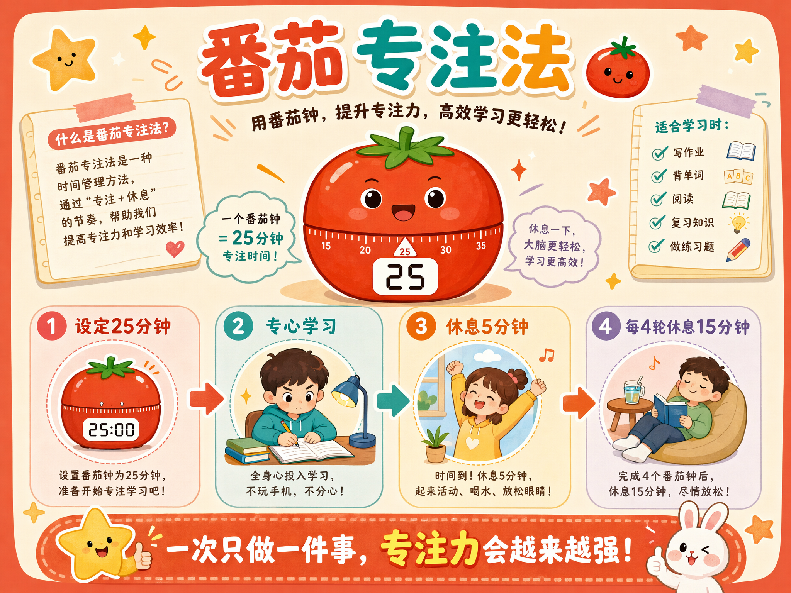
25分钟专注+5分钟休息
把学习时间切成番茄钟：专注25分钟，休息5分钟。每4个番茄钟休息15-30分钟。一次只做一件事！
小学生注意力约20-30分钟。番茄法配合大脑节奏，最佳状态学习，累了就休息再继续。
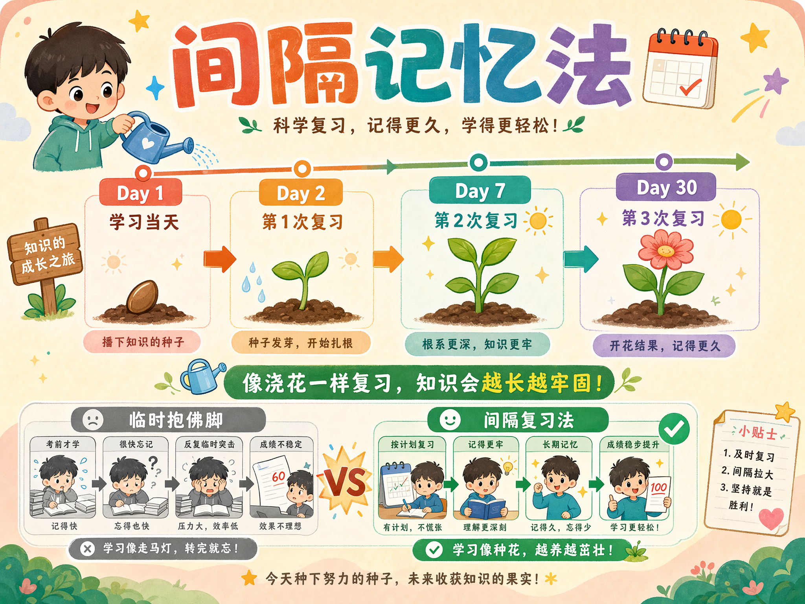
像浇花一样复习
不要考前临时抱佛脚！学完新知识后，在固定时间间隔复习：当天→第二天→一周后→一个月后。
每次在快要忘记时复习，记忆就会更牢固。像给记忆之树浇水：不是一次浇很多，而是每隔几天浇一点。
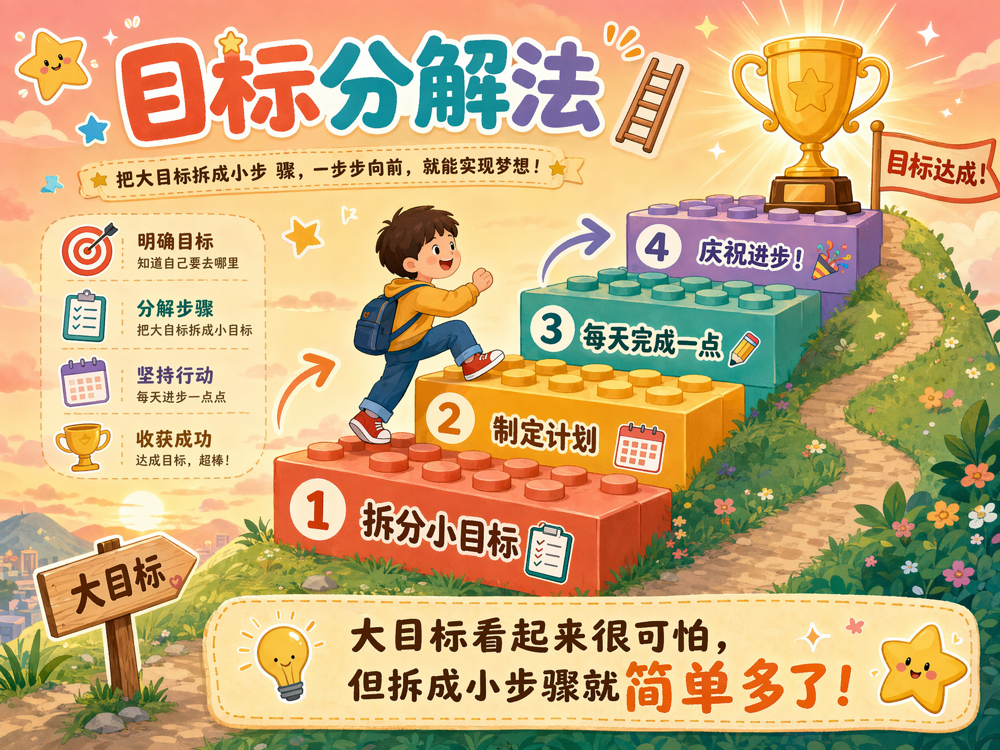
把大目标切成小台阶
面对大目标别被吓到。拆成小步骤：每天背5个→每周复习→每月测试。每步完成后给自己小奖励！
大脑面对太大任务会焦虑拖延。小步骤容易完成，成就感激励继续前进。这就是游戏设计的原理！
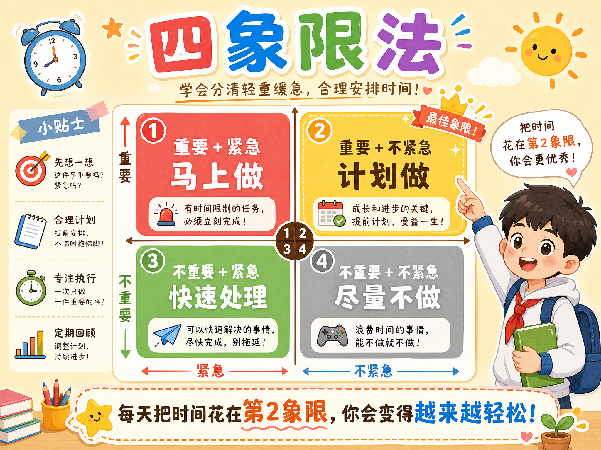
重要/紧急矩阵，先做最重要的
画十字分四格：①重要+紧急(马上做)②重要+不紧急(计划做⭐)③不重要+紧急(快速处理)④不重要+不紧急(少做)。
很多小朋友看起来很忙是因为总在做③④。把时间花在第②象限，你会越来越轻松——这是聪明人的秘密！
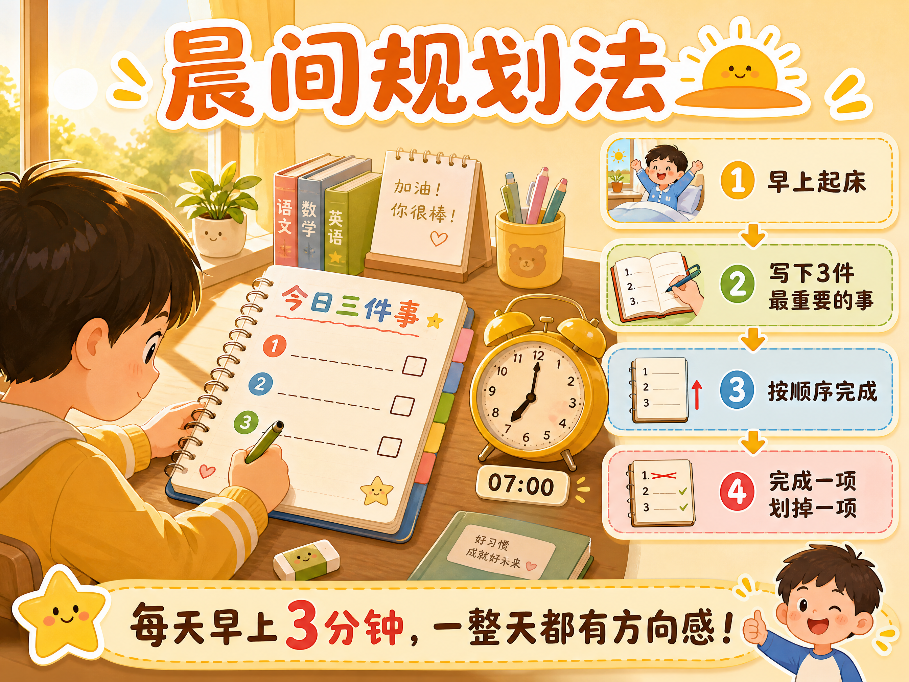
每天早上3分钟列三件事
每天早上写下今天要完成的最重要的3件事。按顺序完成，做完一项划掉一项。
一天没有计划就像没有地图的旅行。花3分钟规划，就知道今天要做什么、先做什么——效率翻倍！
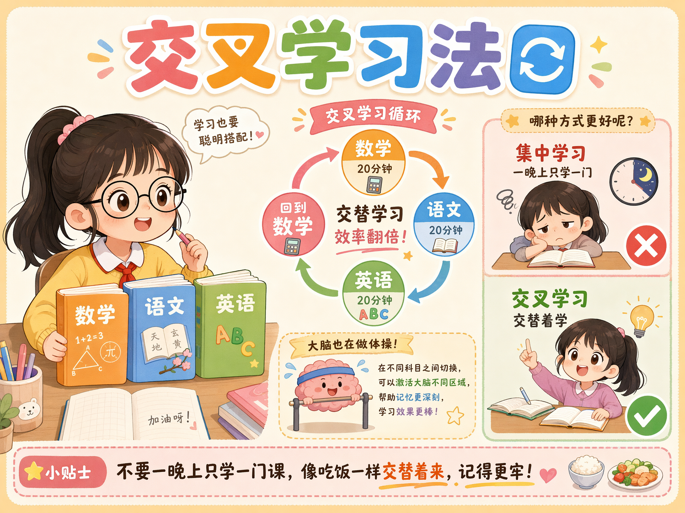
多科目交替穿插
不要一晚上只学一门！数学20分钟→语文20分钟→英语20分钟→回到数学。每次切换=强制回忆=最强记忆强化。
集中学习产生假象。交叉学习每次切换大脑被迫重新提取知识，长期记忆效果是集中学习的2倍以上！
专注后放空，灵感自现
大脑有两种模式：专注模式(聚光灯)和发散模式(泛光灯)。专注40分钟后必须休息10分钟，发呆也是学习的一部分！
发散模式下大脑在后台自动整理知识、产生新连接。很多天才灵感都来自洗澡、散步时的放空。
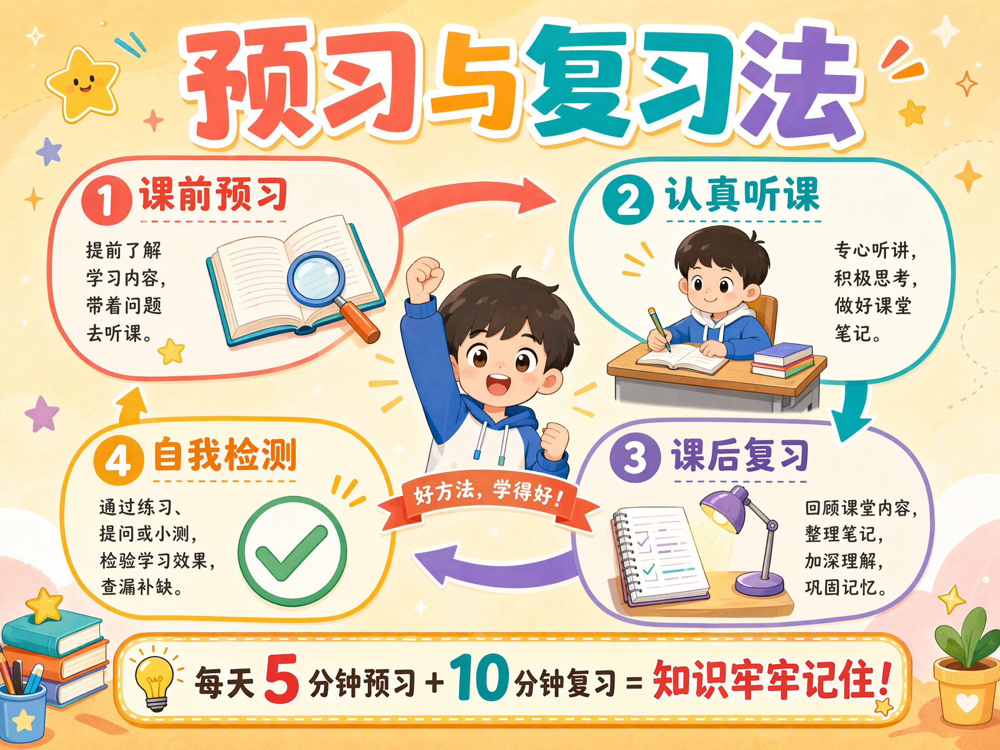
形成学习闭环
课前快速浏览新内容带着问题听课；课后及时巩固，把短期记忆变成长期记忆。两者结合形成完整学习循环。
大脑像图书馆，预习搭空书架，复习把书放对位置。提前了解让你课堂上更容易理解老师。
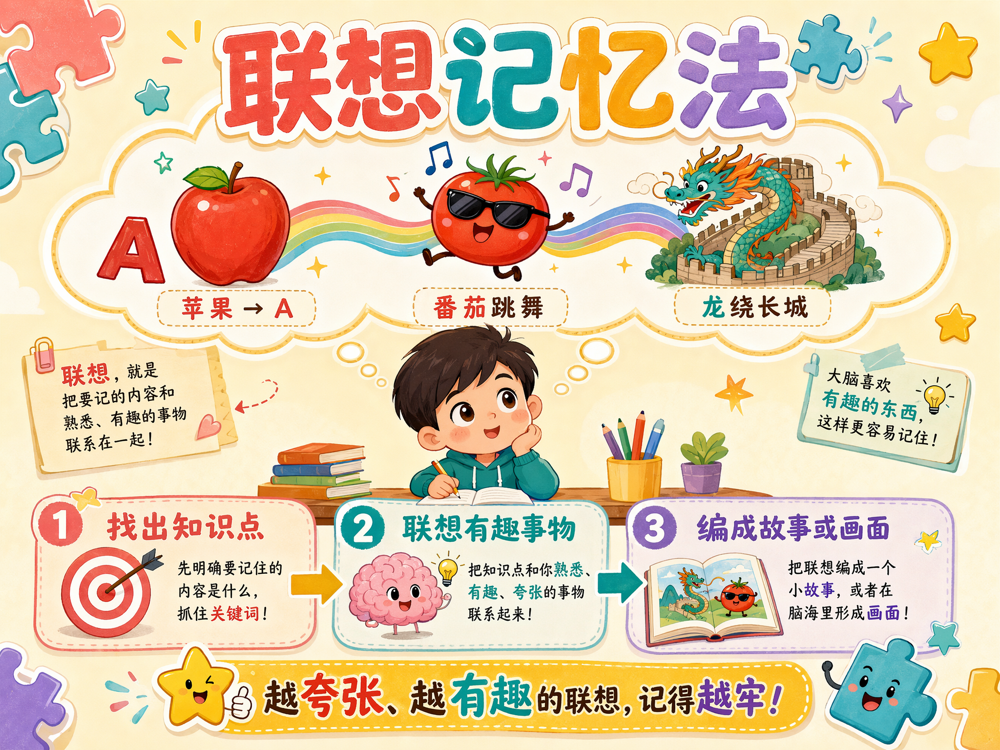
编故事让记忆变有趣
把知识点和熟悉有趣的事物联系起来。越夸张越搞笑，记得越牢！
大脑特别喜欢新奇有趣的画面。这也是为什么我们能记住动画片情节却记不住课本！
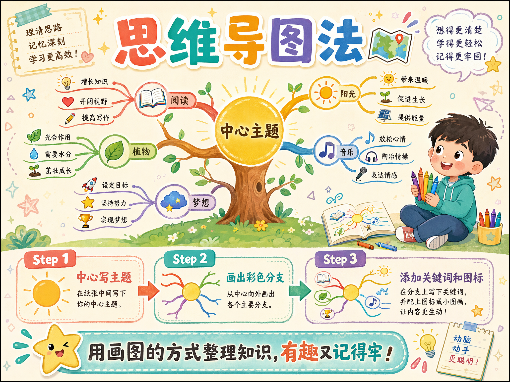
用画图的方式整理知识
在白纸中心写主题，用彩色线条向外画分支。每个分支代表一个知识点，添加关键词和小图标。
大脑喜欢图像和颜色，讨厌长文字。思维导图把文字变成画面，左右脑一起工作。
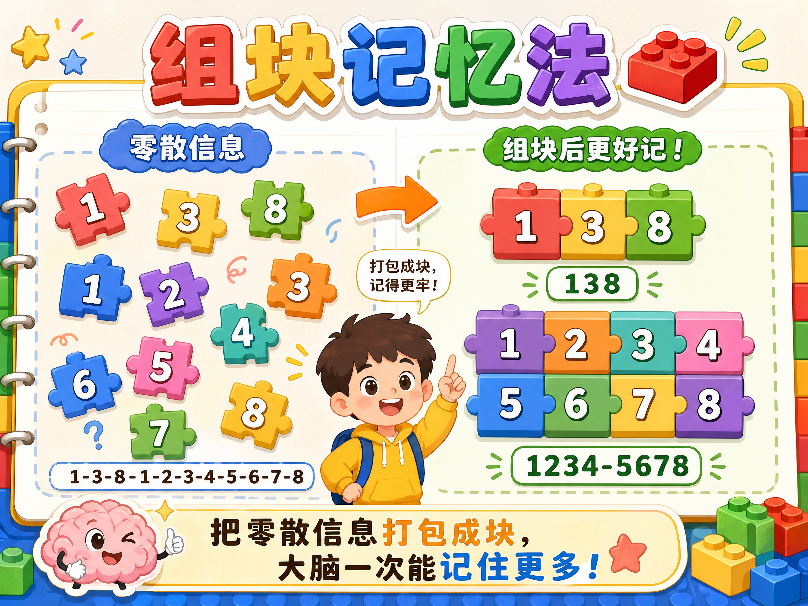
打包信息一次记更多
把零散信息打包成有意义的块。比如手机号138-1234-5678是3个块。背课文也按段落分块来记。
人脑一次只能记住4-7个独立信息。组块后每个块只占一个槽位，容量翻倍！
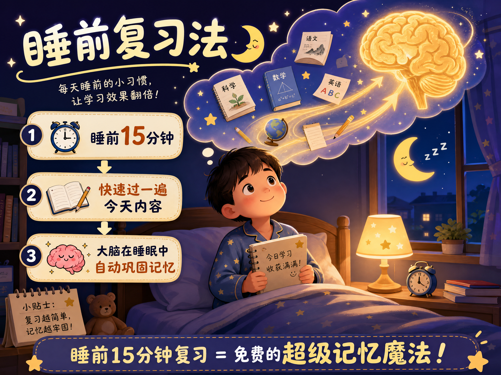
睡前15分钟黄金窗口
睡觉前花15分钟快速过一遍今天学的内容。然后安心入睡——大脑会在你睡觉时自动整理和巩固。
睡眠期间大脑海马体会自动重播白天学过的内容。睡前复习=给大脑下达保存指令！
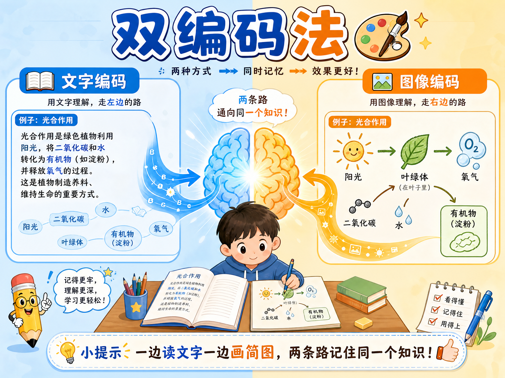
文字+图像双重保险
每学一个新概念，一边读文字一边画简图。用两路同时编码，忘记文字时图像还能提醒你。
大脑有两条记忆通路：语言文字和视觉图像。双路编码相当于双重保险！
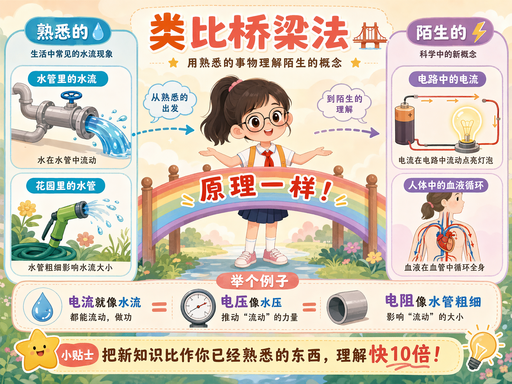
用熟悉事物类比陌生概念
用熟悉的事物类比陌生的概念。比如学电流→电流就像水流，电压像水压，电阻像水管粗细。
类比是人类最强大的思维工具。所有重大科学发现都始于类比。用已知解释未知，理解快10倍！
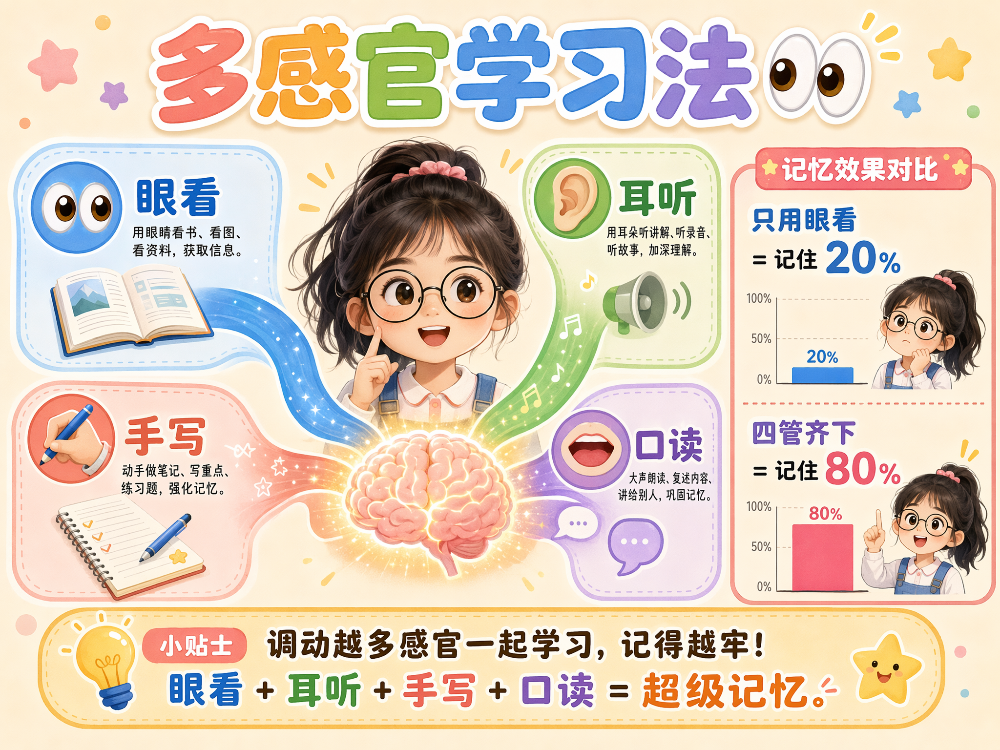
四管齐下记得牢
同时调动多个感官：眼看+耳听+手写+口读。四种感官一起上，记住80%以上！
只用眼看只能记住20%。多感官建立多条提取路径——一条忘了，其他还能帮回忆。
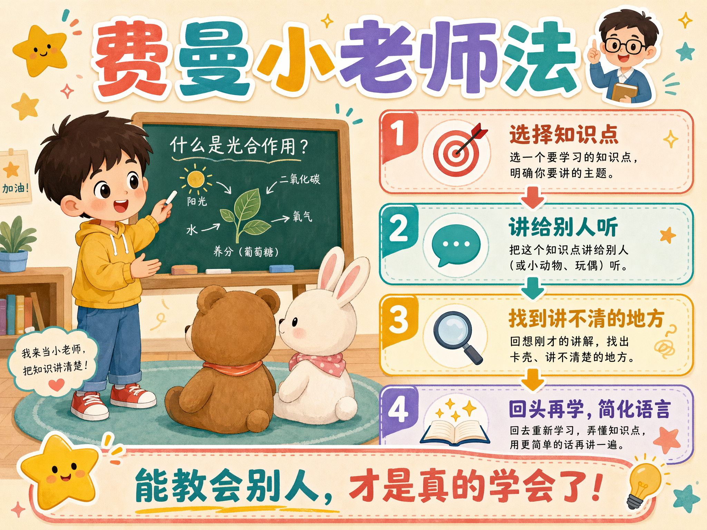
讲给别人听才是真学会
假装自己是小老师，把知识讲给毛绒玩具/宠物/家人听。用最简单的话讲清楚。讲着讲着卡住了？那个地方需要再学！
听懂了≠学会了。能用简单话讲清楚，才说明大脑真正理解了。这是诺贝尔奖得主费曼的秘诀！
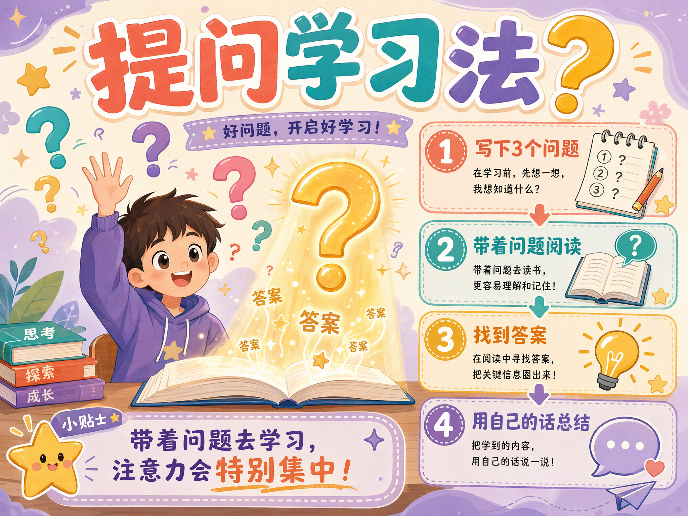
带着问题去学习
学新课前先写下你最想知道的3个问题。然后带着问题去阅读和听课，像侦探寻找答案。
有问题的大脑像磁铁，会自动吸引相关信息。带着具体问题学习时注意力大幅提升！
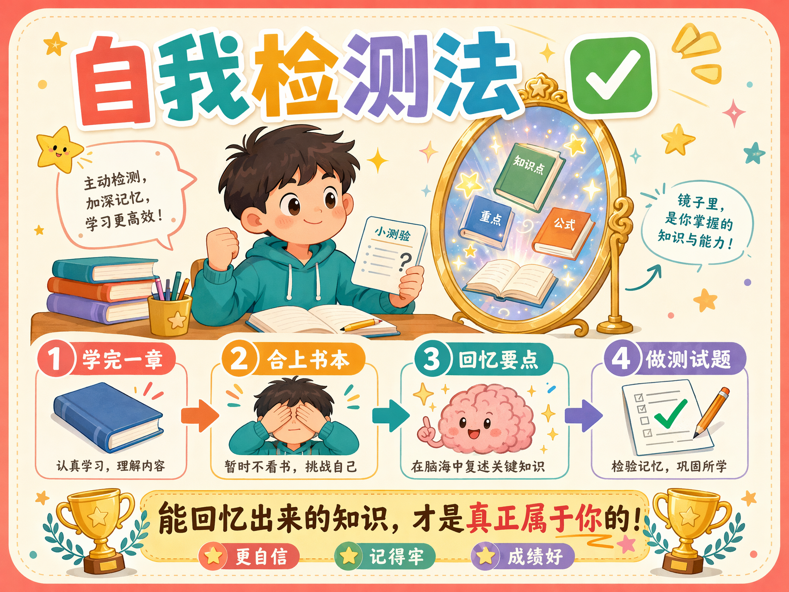
学完后考考自己
学完后不要只是再看一遍。合上书本闭眼回忆主要内容。做练习题检测。发现不会的地方立刻回去重学。
重读课本产生我会了的错觉。回忆才是真正记忆提取练习。检测不是打分，是找到学习盲区！
一页笔记三区结构
把笔记页分成三区：右边(大区)上课记要点；左边(窄条)课后提炼关键词和问题；底部一句话总结。
结构化笔记本身就是复习提纲。遮住右边看左边关键词回忆内容——既是笔记又是自测工具！
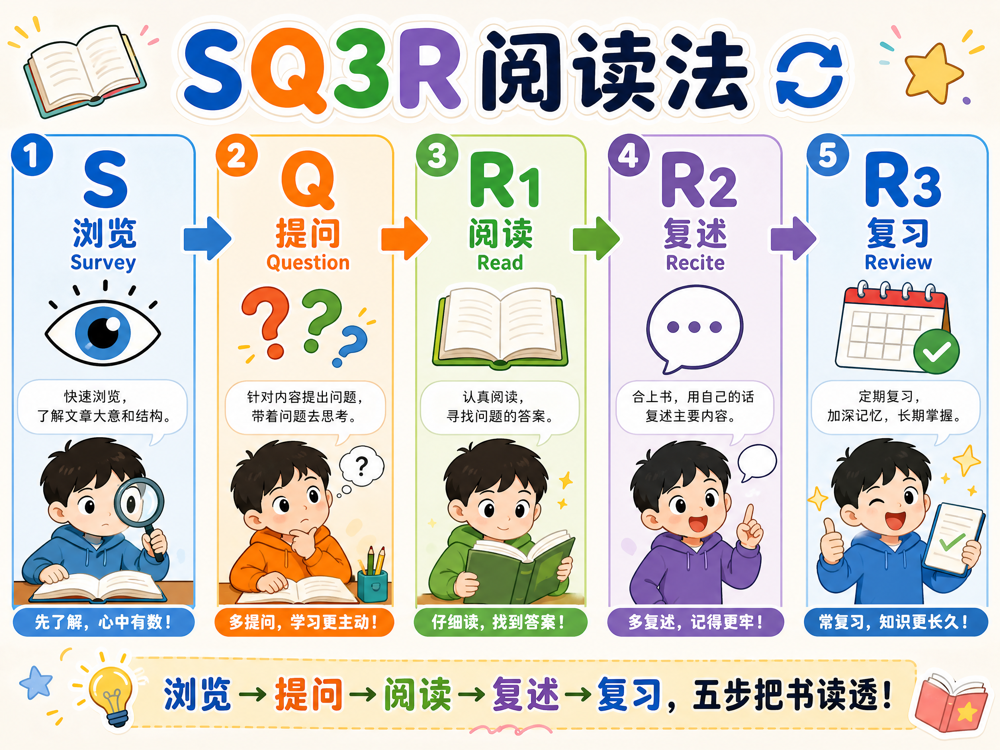
五步把书读透
S=浏览→Q=提问→R1=阅读→R2=复述→R3=复习。五步把被动翻书变成主动探索。
被动阅读只能记住10%，加上提问和复述后记忆留存率提升到90%！
把新知识粘到旧知识上
学新知识时主动问自己：这和我学过的什么有关？为什么会这样？如果…会怎样？把孤立知识连接到已有知识网。
孤立知识1周后忘记70%，但与已有知识建立3个连接后遗忘率降到10%。连接越多记得越牢！
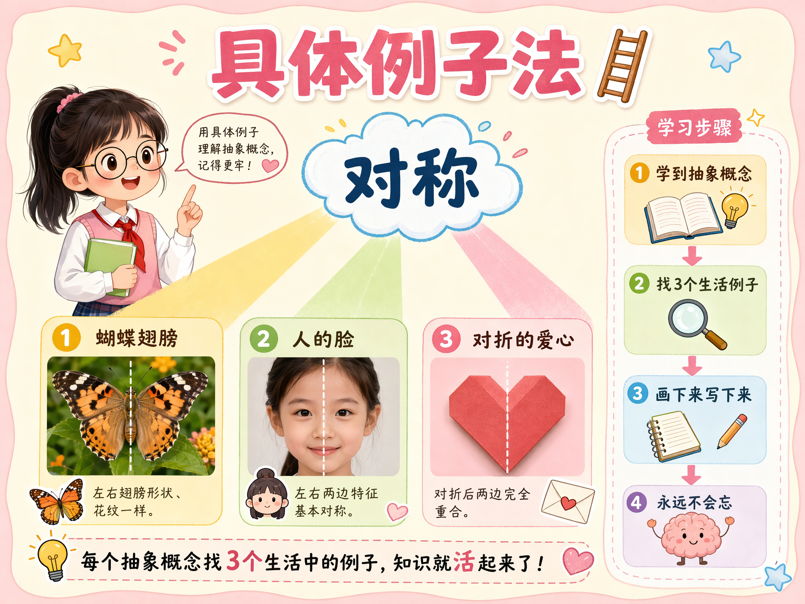
每个概念找3个例子
学抽象概念时找3个生活中的例子。比如学对称→蝴蝶翅膀、人脸、折纸。例子越多理解越深入。
人类大脑理解抽象概念的神经基础是复用具体经验的脑区。3个例子胜过100遍死记！
课堂上像侦探听讲
用三步法听讲：①预测(老师会讲什么？)②抓关键词(快速笔记)③提问(有疑问立刻标记)。
被动听讲只能吸收20-30%。主动预测+抓重点+提问，吸收率提升到70%以上！
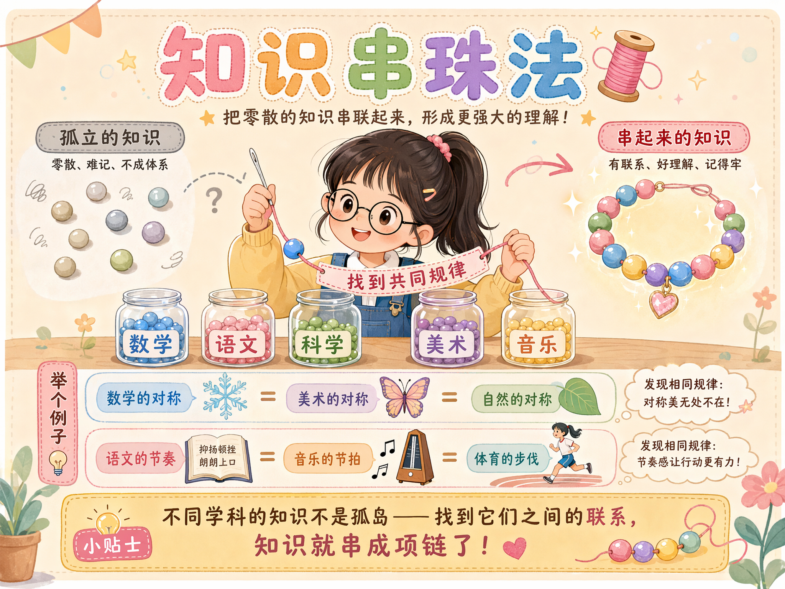
把不同学科知识串起来
不同学科不是孤岛！数学的对称=美术的对称=自然的对称。找到不同学科之间的共同规律。
大脑以网络方式存储知识。不同学科知识串起来它们互相强化——一个领域理解加深另一个！
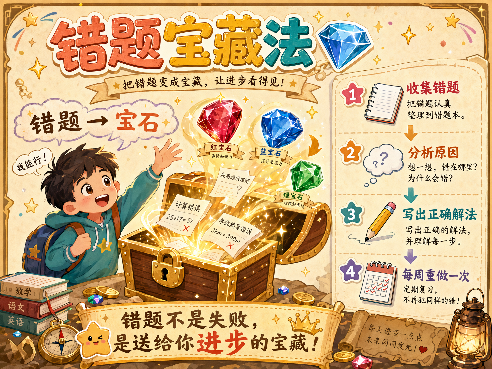
每道错题都是宝石
准备专门错题本抄错题。分析为什么错、写出正确解法、标注注意点。每周翻看一次。
大脑从错误中学习的效率是从成功中学的3倍。错题本就是进步路线图！
伙伴共学互相讲解
找学习伙伴互相讲解知识点、互相提问、互相批改。轮流当小老师看谁讲得更清楚！
学习金字塔：听讲记住5%，教给别人记住90%！两个人学更开心效果也好得多。
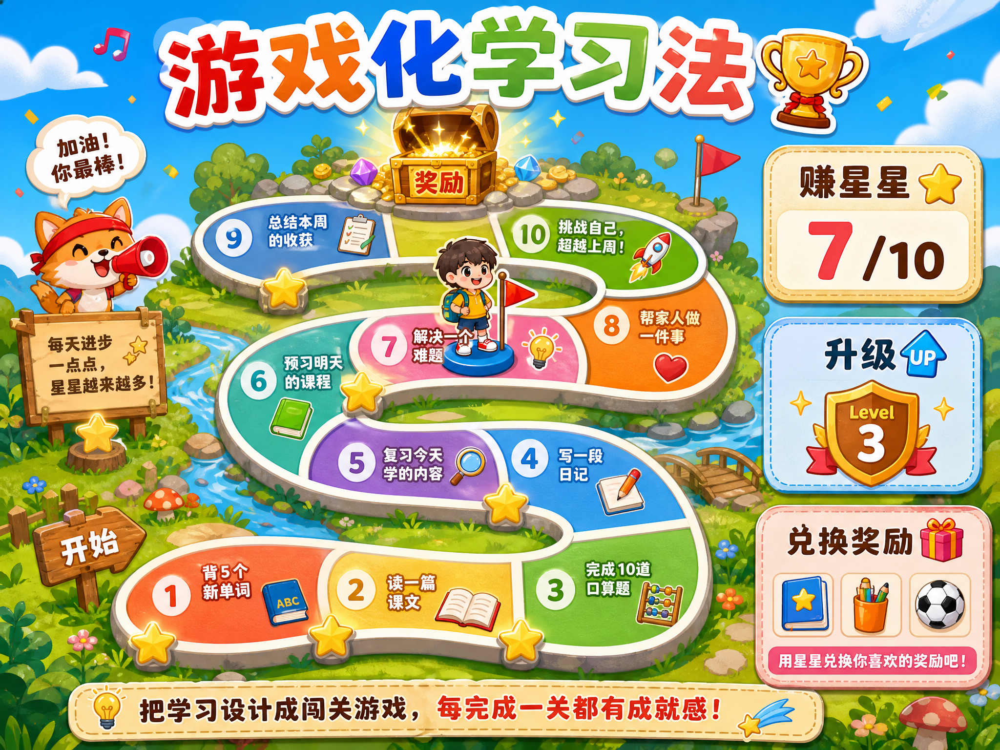
把学习变成闯关
画学习闯关地图，每完成一个任务前进一格。攒够10颗星兑换奖励。
大脑对游戏奖励系统和学习用同一套回路。关卡→完成→奖励=源源不断的动力！
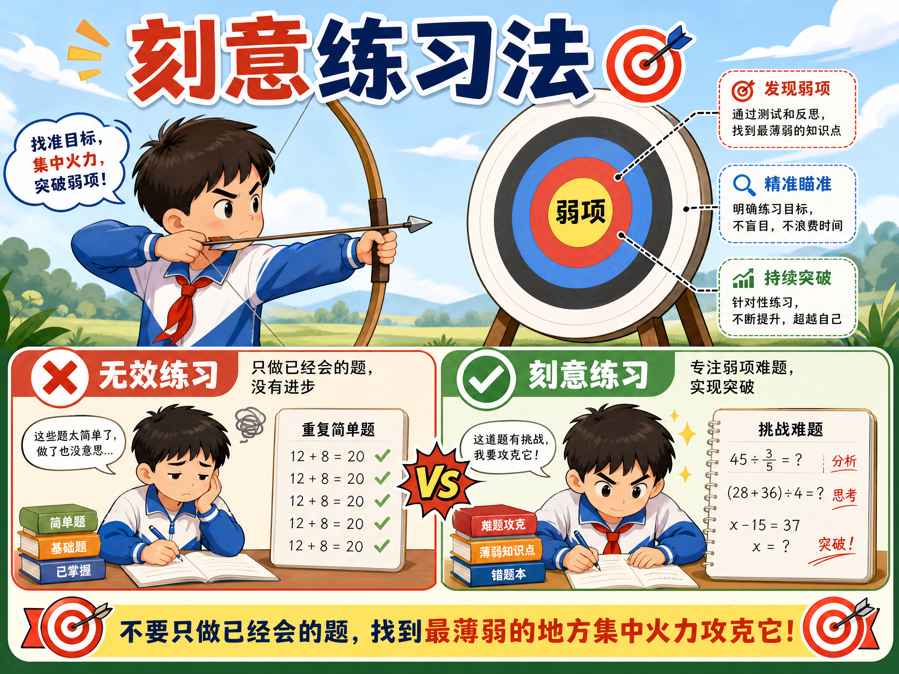
专攻弱项不做会的
找出最薄弱的知识点集中火力反复练习。瞄准有点难但能做出来的难度。
花1小时攻克弱项>花3小时做已经会的题。学习区原理：效率最高在有点难但能做出来处。
换角色思考开脑洞
假装你是科学家、诗人或数学家来思考问题。换个角色思路大开！
角色扮演激活不同神经网络。站不同角度看问题，往往发现平常发现不了的答案。
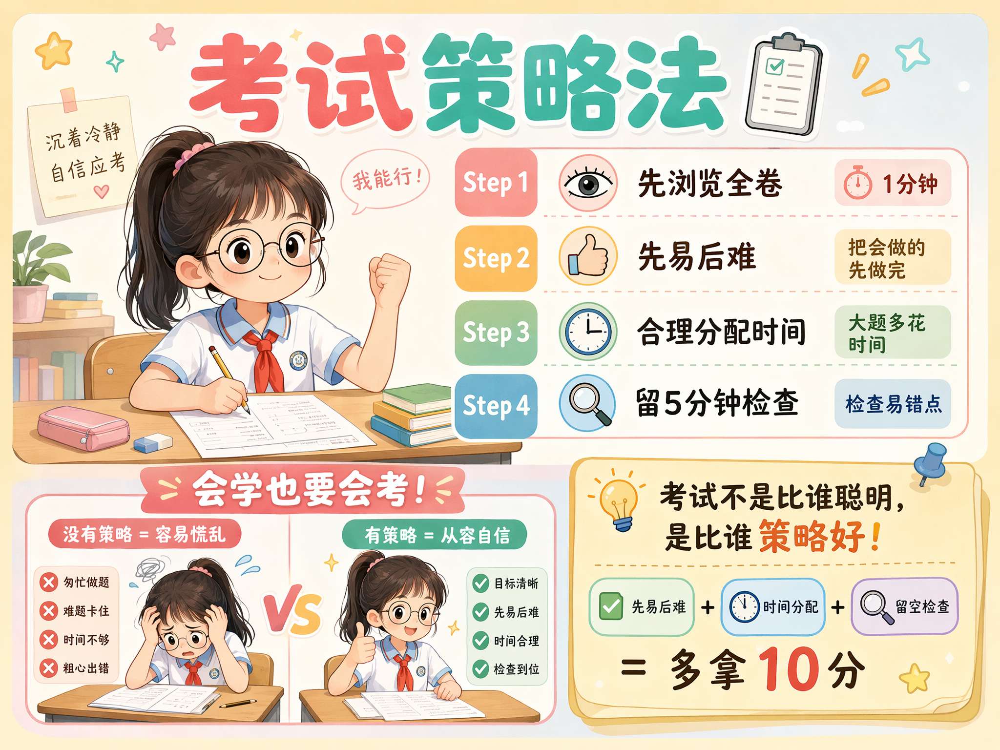
会学也要会考
考试口诀：先浏览(1分钟)→先易后难(把会做的先做完)→合理分配时间→留5分钟检查。
考试成绩=知识储备×考试策略。好的策略能让你多拿10分！
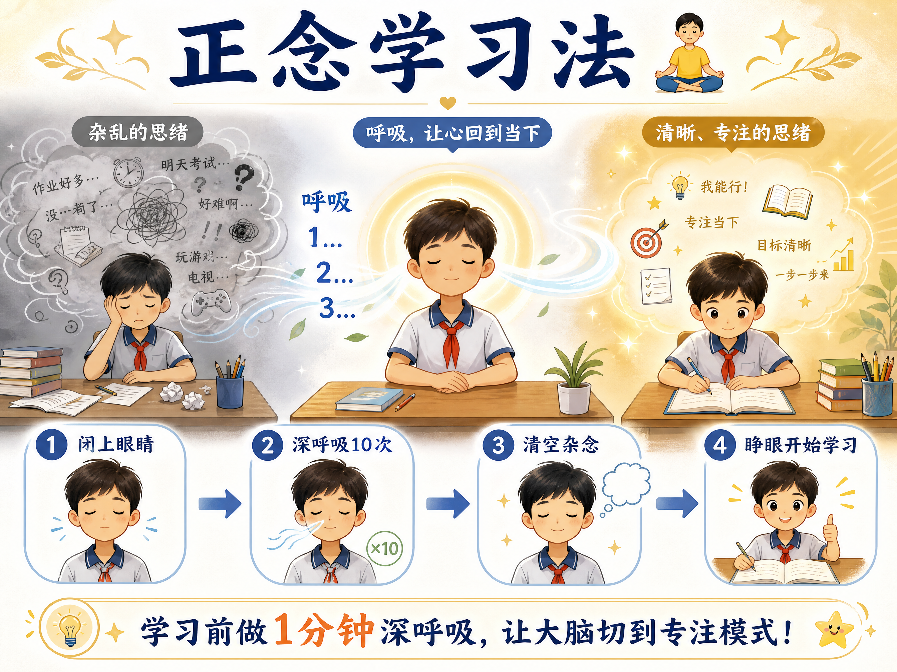
1分钟深呼吸清空杂念
开始学习前闭眼做10次深呼吸。只关注呼吸起伏，把杂念像云一样推开。然后睁眼平静学习。
大脑从β波(紧张)切换到α波(放松专注)，学习效率最高。1分钟深呼吸=按下大脑重置按钮。
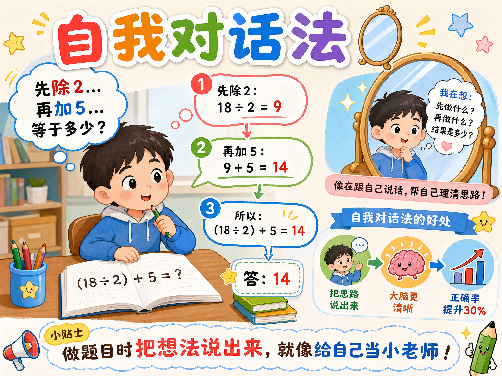
把思路说出来
做题目时自言自语把思考过程说出来。就像给自己当实时小老师。
语言化迫使大脑把模糊思维变清晰。说出来能提升30%正确率！说不清楚=没真理解。
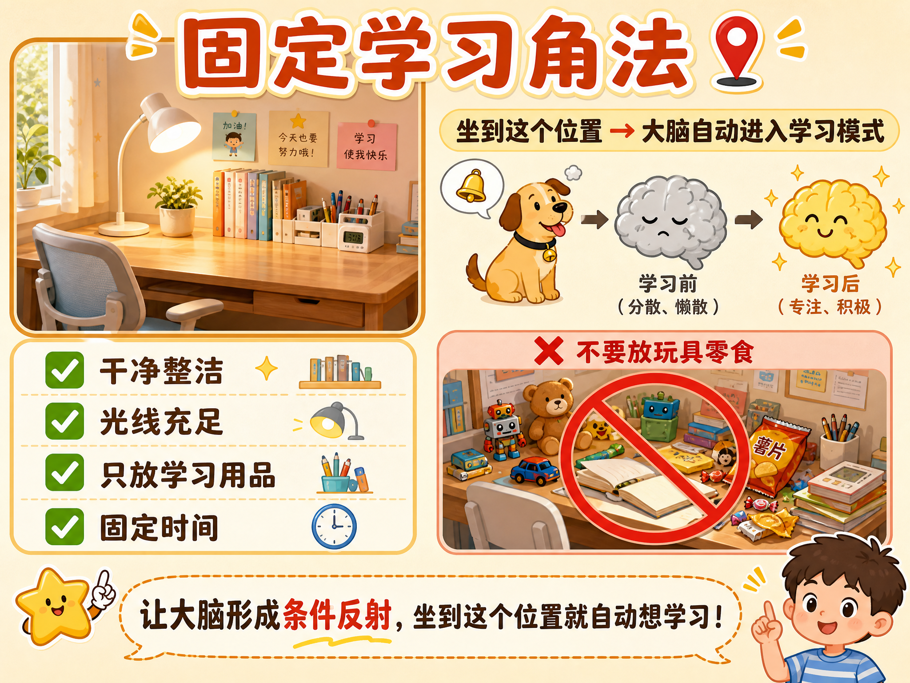
专属空间自动进入状态
整理一个只用于学习的固定角落：干净书桌、好灯光、学习用品整齐。不放玩具和零食。
大脑建立位置-行为条件反射。坐到专属学习角，大脑自动切换学习模式。
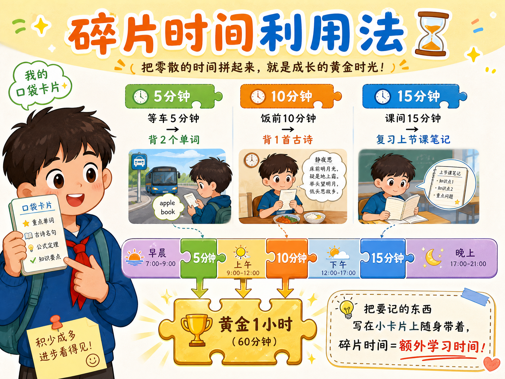
口袋卡片积少成多
把等车、排队、饭前等零碎时间利用起来。准备口袋卡片，写本周要背的内容随时看。
每天碎片时间加起来超过1小时！每天用碎片背2个单词，一年730个——比课本词汇量还大！
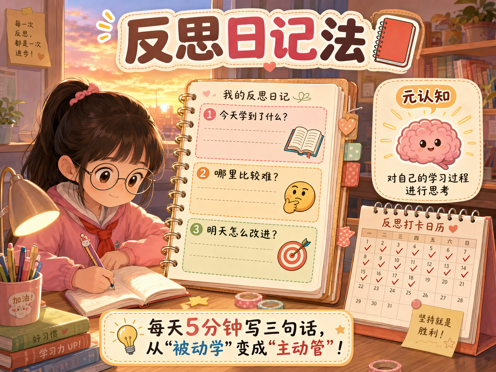
每天三句话反思学习
每天花5分钟写三句话：①今天学到什么？②哪里比较难？③明天怎么改进？从被动学变成主动管。
对自己思考的思考(元认知)是预测学业成绩的最强指标。反思帮你发现学习规律！
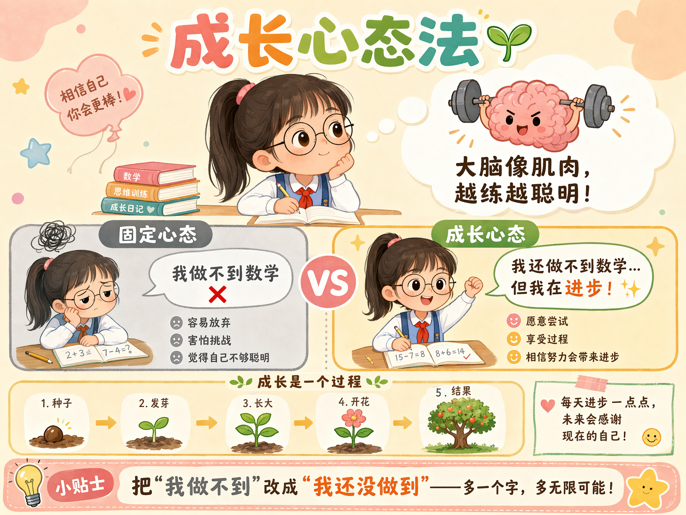
"我还没做到"的力量
相信大脑像肌肉越练越聪明。把'这次没考好'改成'这次没考好但我可以更努力'。
斯坦福30年研究：相信智力可成长的学生面对困难坚持时间延长2倍。一句话改变一生！
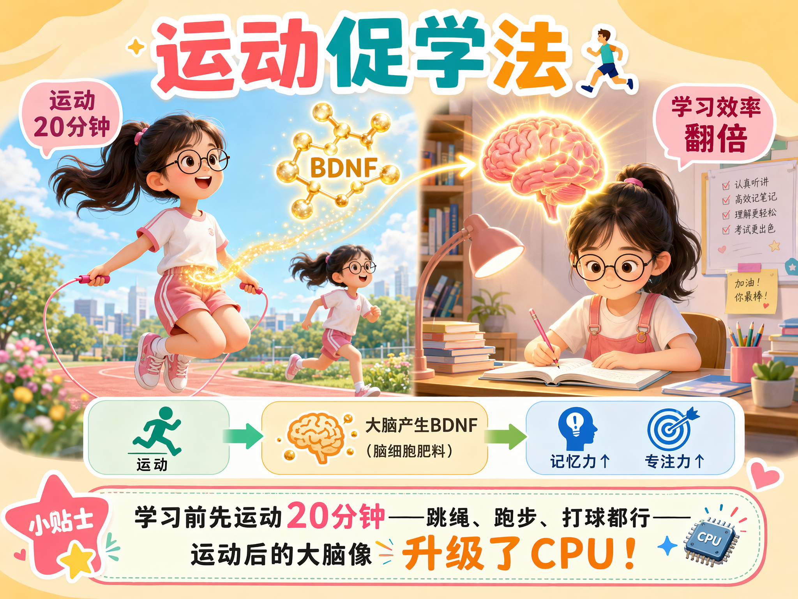
先运动20分钟再学习
学习前先运动20分钟——跳绳跑步打球。运动后大脑产生BDNF(脑细胞肥料)，记忆力专注力大幅提升！
BDNF是大脑的超级肥料，让神经元生长新连接。运动后学习=大脑升级了CPU！
新习惯挂到旧习惯上
不靠意志力靠惯性！公式：在[现有习惯]之后我会[新学习习惯]。如刷牙后→背1个单词。
意志力有限但习惯无限。新行为附着在老习惯上时不需要额外努力——自动执行！
找到难度刚好的甜蜜点
太简单无聊太难焦虑。找到有点难但能做出来的甜蜜点——完全沉浸忘记时间。这就是心流状态。
心流中学1小时=普通状态学3小时。关键持续调整难度保持在甜蜜区！
手写记忆深度是打字3倍
重要知识一定要手写！打字太快大脑来不及深度加工，手写时大脑被迫提炼总结。
手写激活大脑更大神经网络——包括运动皮层和空间处理区。慢就是快少就是多！
40种方法分成5大类，先选一个最喜欢的开始。每天进步一点点！